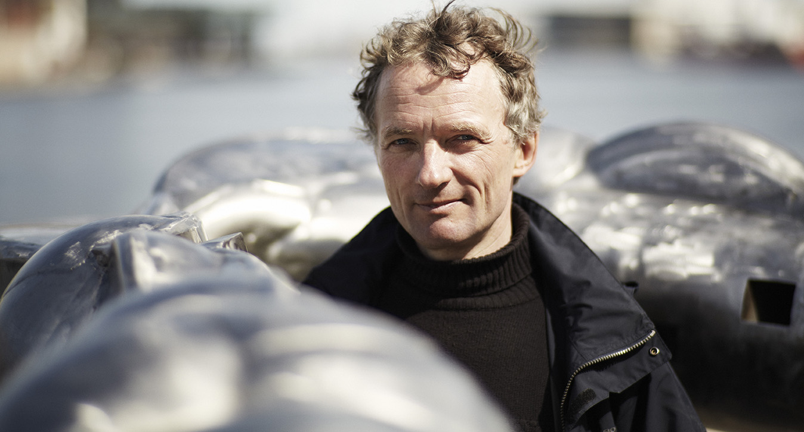
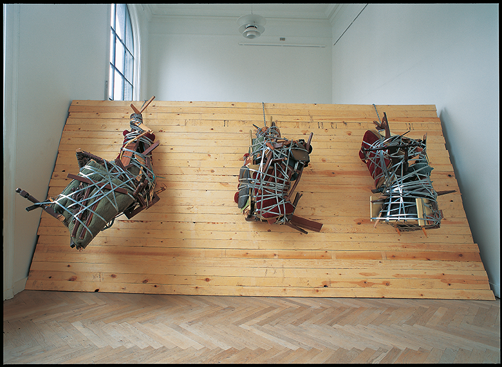

Biografi: Bjørn Poulsen
Født 1959, bor og arbejder i København og i Nordsjælland. Uddannet i perioden 1981-1988 på Det Kgl. Danske Kunstakademi, København.
Hans skulpturer står på museer og i det offentlige rum mange steder i Danmark, bl.a. på Bagsværd Skole, PET i Søborg, Struer Gymnasium og Aarhus Biblioteksarkiv.
Her ses et udvalg af Bjørn Poulsens værker:
{kind=link}
Navigator Margretheskåle, Akryl L. 1,20 2005. Privateje.
{kind=link}
Limbo Gummislanger, plastrør L. 6 m. 2003 Charlottenborg. Statens Kunstfond
{kind=link}
OH 12 Forsølvet bronze L. 18 m. 2012 Struer Gymnasium, Ny Carlsbergfondet.
{kind=link}
Uden titel Jern L. 0,70 m 2016 København
{kind=link}
Leviathan Plasik, skruer, L. 4, 7 m. 2015 København
{kind=link}
Titan Gips. L. 3.20 m. 2004 Veksølund

{kind=link}
Strange Fruits Møbler, træ etc. L. 5,20 m. 1999 Charlottenborg Præmiet af Statens Kunstfond
{kind=link}
Vejviseren Glaserede Stentøj H. 5,5 m. 2007 Vissenbjerg. Ny Calsbergfondet.-Assens Kommune.
{kind=link}
Gargoyles Forsølvet bronze, L. 1,20 m. 2014 Bagsværd Skole, Statens Kunstfond
{kind=link}
Uden Titel 2014 træ galvaniseret jern, H. 2,40 m.
{kind=link}
Areseros Bronze, L. 1,70 m. 2013 PET. København. Ny Carlsbergfondet.